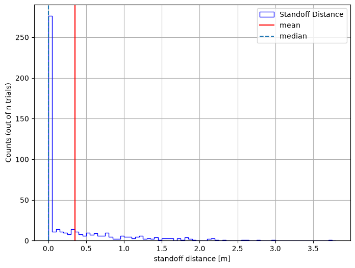

Standoff Monte Carlo#
See Monte Carlo - Arrhenius Degredation for a more in depth guide. Steps will be shortened for brevity. This journal applies a Monte Carlo to the Standoff Calculation
# if running on google colab, uncomment the next line and execute this cell to install the dependencies and prevent "ModuleNotFoundError" in later cells:
# !pip install pvdeg
import pvlib
import numpy as np
import pandas as pd
import json
import os
import pvdeg
from pvdeg import DATA_DIR
import matplotlib.pyplot as plt
# This information helps with debugging and getting support :)
import sys
import platform
print("Working on a ", platform.system(), platform.release())
print("Python version ", sys.version)
print("Pandas version ", pd.__version__)
print("Pvlib version ", pvlib.__version__)
print("Pvdeg version ", pvdeg.__version__)
Working on a Linux 6.17.0-1022-azure
Python version 3.11.17 (main, Oct 1 2026, 14:32:31) [GCC 13.3.0]
Pandas version 3.0.6
Pvlib version 0.16.1
Pvdeg version 0.1.dev1+g1a9e9e277
Simple Standoff Calculation#
This is copied from another tutorial called 4 - Standards.ipynb, please visit this page for a more in depth explanation of the process for a single standoff calculation.
# Load weather data from locally saved files to avoid API rate limits
WEATHER = pd.read_csv(
os.path.join(DATA_DIR, "psm4_nyc.csv"), index_col=0, parse_dates=True
)
with open(os.path.join(DATA_DIR, "meta_nyc.json"), "r") as f:
META = json.load(f)
# To use the NSRDB API instead, uncomment the lines below and add your API key
# Get your API key at: https://developer.nlr.gov/signup/
# weather_db = "PSM4"
# weather_id = (40.633365593159226, -73.9945801019899) # Manhattan, NYC
# weather_arg = {
# "api_key": "YOUR_API_KEY",
# "email": "user@mail.com",
# "map_variables": True,
# }
# WEATHER, META = pvdeg.weather.get(weather_db, weather_id, **weather_arg)
# simple standoff calculation
height1 = pvdeg.standards.standoff(weather_df=WEATHER, meta=META)
# more arguments standoff calculation
height2 = pvdeg.standards.standoff(
weather_df=WEATHER,
meta=META,
tilt=None,
azimuth=180,
sky_model="isotropic",
temp_model="sapm",
x_0=6.1,
wind_factor=0.33, # default
)
print(height1)
print(height2)
The array surface_tilt angle was not provided, therefore the latitude of 40.6 was used.
The array azimuth was not provided, therefore an azimuth of 180.0 was used.
The array surface_tilt angle was not provided, therefore the latitude of 40.6 was used.
x T98_0 T98_inf
0 0.522443 71.778148 48.754265
x T98_0 T98_inf
0 0.490293 71.778148 48.754265
Defining Correlation Coefficients, Mean and Standard Deviation For Monte Carlo Simulation#
We will leave the list of correlations blank because our variables are not correlated. For a correlated use case visit the Monte Carlo - Arrhenius.ipynb tutorial.
Mean and standard deviation must always be populated if being used to create a dataset. However, you can feed your own correlated or uncorrelated data into the simulate function but column names must be consistent.
# These numbers may not make sense in the context of the problem but work for demonstraiting the process
stats = {"X_0": {"mean": 5, "stdev": 3}, "wind_factor": {"mean": 0.33, "stdev": 0.5}}
corr_coeff = []
samples = pvdeg.montecarlo.generateCorrelatedSamples(corr_coeff, stats, 500)
print(samples)
X_0 wind_factor
0 3.974385 0.712030
1 4.519734 -0.279784
2 -0.837214 0.924167
3 4.660045 0.146238
4 7.298256 1.447492
.. ... ...
495 1.523529 0.504617
496 2.025857 0.019274
497 8.030233 1.083214
498 5.112896 -0.621268
499 -0.946472 1.294368
[500 rows x 2 columns]
Standoff Monte Carlo Inputs#
When using the pvdeg.montecarlo.simulate() function on a target function all of the target function’s required arguments must still be given. Our non-changing arguments will be stored in a dictionary. The randomized monte carlo input data will also be passed to the target function via the simulate function. All required target function arguments should be contained between the column names of the randomized input data and fixed argument dictionary,
# defining arguments to pass to the target function, standoff() in this case
function_kwargs = {
"weather_df": WEATHER,
"meta": META,
"azimuth": 180,
"tilt": 0,
"temp_model": "sapm",
"sky_model": "isotropic",
"conf_0": "insulated_back_glass_polymer",
"conf_inf": "open_rack_glass_polymer",
"T98": 70,
"irradiance_kwarg": {},
"conf_0_kwarg": {},
"conf_inf_kwarg": {},
"model_kwarg": {},
}
# notice how we left off parts we want to use in the monte carlo simulation because they are already contained in the dataframe
results = pvdeg.montecarlo.simulate(
func=pvdeg.standards.standoff,
correlated_samples=samples,
**function_kwargs,
)
Dealing With Series#
Notice how our results are contained in a pandas series instead of a dataframe.
This means we have to do an extra step to view our results. Run the block below to confirm that our results are indeed contained in a series. And convert them into a simpler dataframe.
print(type(results))
# Convert from pandas Series to pandas DataFrame
results_df = pd.concat(results.tolist()).reset_index(drop=True)
<class 'pandas.Series'>
print(results_df)
x T98_0 T98_inf
0 0.000000 64.995344 44.653943
1 0.973860 74.541568 51.111662
2 0.315550 61.313909 42.338950
3 0.330846 71.531092 49.190718
4 0.000000 49.367780 36.468264
.. ... ... ...
495 0.000000 67.804024 46.545836
496 0.239096 72.506204 49.993451
497 0.000000 58.301879 40.637894
498 1.423147 75.768446 52.026483
499 0.695602 53.470231 38.240483
[500 rows x 3 columns]
Viewing Our Data#
Let’s plot the results using a histogram
bin_edges = np.arange(results_df["x"].min(), results_df["x"].max() + 0.1, 0.05)
plt.figure(figsize=(8, 6))
plt.hist(
results_df["x"],
bins=bin_edges,
edgecolor="blue",
histtype="step",
linewidth=1,
label="Standoff Distance",
)
plt.ylabel("Counts (out of n trials)")
plt.xlabel("standoff distance [m]")
plt.axvline(np.mean(results_df["x"]), color="red", label="mean")
plt.axvline(np.median(results_df["x"]), linestyle="--", label="median")
plt.legend()
plt.grid(True)
plt.show()
